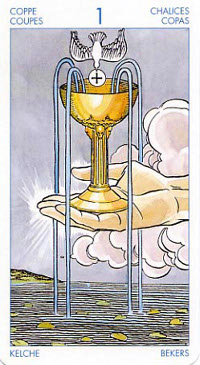

Туз Кубков
Эта карта означает «Дар». Она символизирует чувства, переполняющие сердце. Для артиста, писателя, художника означает период творческого подъема.
В отличие от Туза Жезлов она, наоборот, не рекомендует вмешиваться в ход событий: лучше ждать, пока проблемы разрешатся сами собой. В таком случае Туз Кубков означает «подарок судьбы», поворот к лучшему.
Прямое положение: начало большой любви, радость, довольство, жилище, пища, изобилие, плодородие, праведная пища, счастье, вытекающее из всего этого.
Данная карта может возвещать о начале отношений или об их углублении.
Туз Кубков - одна из самых лучших карт в колоде Таро. Как и другие тузы, он указывает на величайший шанс, нам открывающийся; это может быть и шанс полной самореализации.
Туз кубков символизирует выход за пределы мира вещей. Эта карта как бы взламывает обыденность.
Ловушка- действия, обусловленные только чувством; опасность быть погребенным под эмоциями.
В прямом положении карта обычно указывает на то, что вы находитесь в преддверии чего-то, что принесет вам радость, мир и гармонию. Может сигнализировать о начале большого чувства, о каком-то событии, которое повлечет за собой роман, возможно, заключение брака.
Туз Чаш является одной из самых благоприятных карт в колоде Таро. Его появление в раскладе на ситуацию предсказывает скорые позитивные изменения в судьбе. Поскольку масть Чаш главным образом «отвечает» за любовные переживания, выпавший Туз Чаш - знак того, что вскоре в вашу жизнь войдет большое чувство.
Определить по данной карте, закончится ваш роман браком или нет, к сожалению, невозможно. Однако для этой цели вы можете использовать Арканы Посохов. (они, в свою очередь, отвечают за юридическое оформление ваших отношений).
Карта плодородия, праздника,союзов.Обещает счастливый брак, начало новой любви,крепкое здоровье, изобилие,приглашение. Советует укреплять существующие знакомства и заводить новые, оказывать поддержку другим людям.Сулит исполнение желаний и знакомства на тусовках, вечеринках и праздниках.
В перевернутом виде означает, что время для проявления способностей и творческого потенциала еще не пришло, или что «подарков судьбы» не будет. В практическом плане – подарок, который вы должны преподнести кому-то (то есть, возможно, взятка). Вы можете переживать скучный и неинтересный период, вам может недоставать вдохновения.
В отрицательном значении:ложь, обман,разочарования в отношениях, неверность, эгоизм. Бесплодие,фальшивые чувства,также алкагольная зависимость.